On this page Overview
Getting started, step by step
A visual tour of dsm — from your first launch to bringing your existing SDKs under management, then installing, searching, and removing .NET SDKs. Every step has a real screenshot of the terminal UI.
Most developers come to dsm with .NET SDKs already on their machine — from the official installer, a Linux package, or Homebrew. dsm manages SDKs through dotnetup, so install that first — then your existing SDKs show up as Unmanaged and dsm can bring them all under management in a single step. A completely empty machine is the exception, not the rule.
Lifecycle icons
Each row in dsm is tagged with one of these icons so you can judge a version at a glance.
On Windows, dsm uses symbols instead of emoji (Windows console fonts don't render color emoji reliably): ✓ Active, ○ Preview, △ Maintenance, ✗ End of Life.
Launch dsm
Open a terminal and run:
dsm
You're greeted with an animated block-letter banner with a teal-to-lime shine sweep. To skip it, run dsm --no-splash.
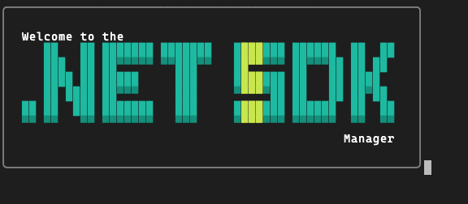
The banner's animated teal-to-lime shine sweep takes its cue from Aspire and its polished developer experience.
Once it loads, you land on the main screen. The SDKs panel is on top, Runtimes below, and a compact Setup panel (showing your dotnetup version) sits in the top-right. The footer always lists the keys available for the focused panel.
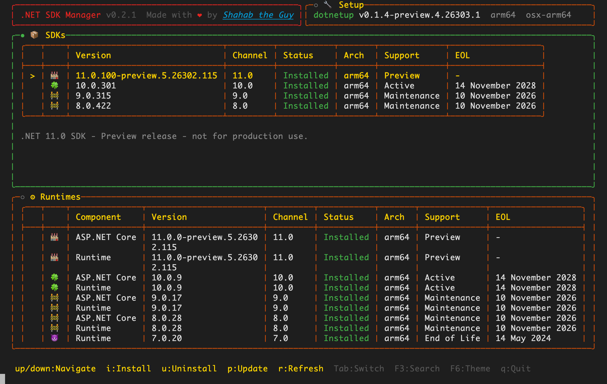
- ↑ ↓ or j k — move the selection
- Tab — cycle focus between SDKs, Runtimes, and Setup
- F6 — toggle dark / light theme · q — quit
Install dotnetup
dsm uses dotnetup — the official .NET acquisition tool — to do the actual installing and removing. On a fresh machine the Setup panel will show dotnetup not found.
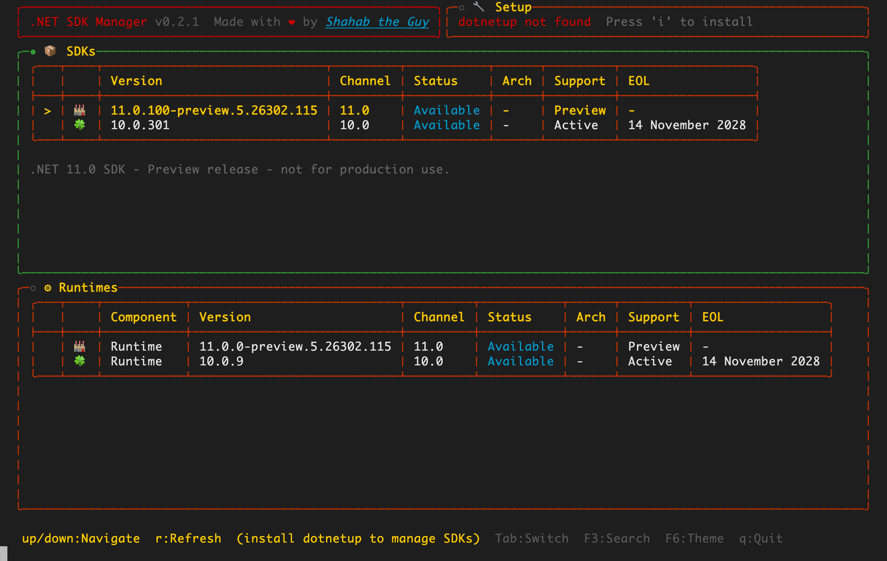
Press Tab until the Setup panel is focused (its title dot turns green), then press i to install dotnetup.
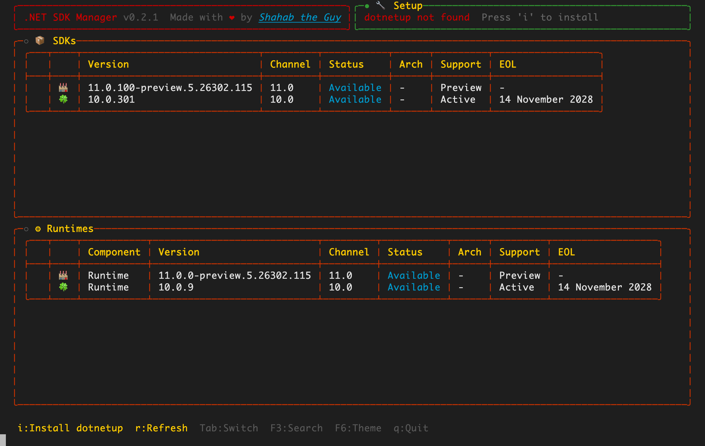
dsm briefly drops out of the UI to run the install command in your real terminal so you can see the live output, then returns and refreshes automatically. When it's done, the Setup panel shows your installed dotnetup version, architecture, and RID.
Migrate your existing SDKs
This is where most people start. If you already had .NET installed before dsm, those SDKs appear right away — but tagged Unmanaged. dotnetup didn't install them (they live somewhere like /usr/local/share/dotnet), so it can't update or remove them until you hand them over.
The Unmanaged tag and the migrate action only appear once dotnetup is installed (step 2). Before that, dsm simply lists your SDKs as Installed — there's nothing to manage them with yet.
On an unmanaged row the usual i / u / p actions don't apply — they're replaced by a single migrate action, and the footer advertises it whenever an unmanaged SDK is in play.
When dotnetup is installed but hasn't taken over your existing SDKs yet, every pre-existing version shows up tagged Unmanaged. Select one and the footer swaps the install/uninstall keys for a single m migrate action; the line under the table tells you exactly where that copy lives.
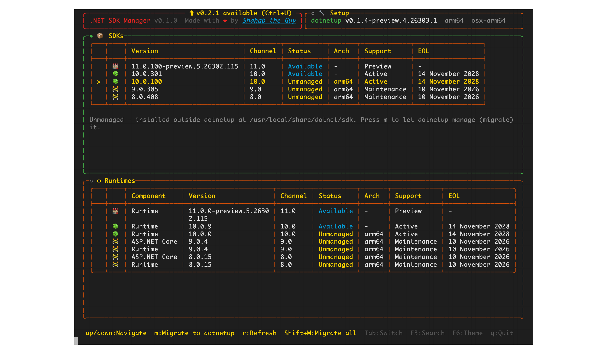
Migrate one SDK
Focus the SDKs panel, highlight an Unmanaged version, and press m. dsm installs that exact version into dotnetup's directory so it becomes managed. Your original copy is left exactly where it was — dsm tells you where, and how to remove it, when it finishes.
Migrate them all at once
Press Shift+M from anywhere on the main screen to migrate every unmanaged SDK in one go. dsm first shows a confirmation dialog summarising exactly what will happen:
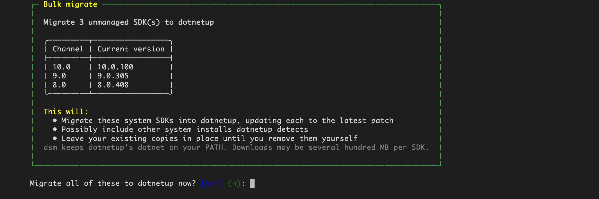
Confirm with y and dsm hands off to dotnetup sdk install <channels> --migrate-from-system, migrating each SDK and updating it to the latest patch.
Migrating installs a fresh, managed copy — your original install stays on disk. Once you've confirmed the managed version works, remove the old one with the official .NET uninstall tool (e.g. dotnet-core-uninstall remove --sdk <version>). That location often holds several versions, so never delete the whole folder.
- m — migrate the selected unmanaged SDK (exact version)
- Shift+M — migrate all unmanaged SDKs, with a confirmation dialog
Install a .NET SDK
With dotnetup in place, the SDKs panel shows the latest version of each active and preview channel. Anything not yet on your machine is marked Available.
Focus the SDKs panel with Tab and move to the version you want with ↑ ↓. The line below the table describes the selected channel, and the footer shows the actions you can take.
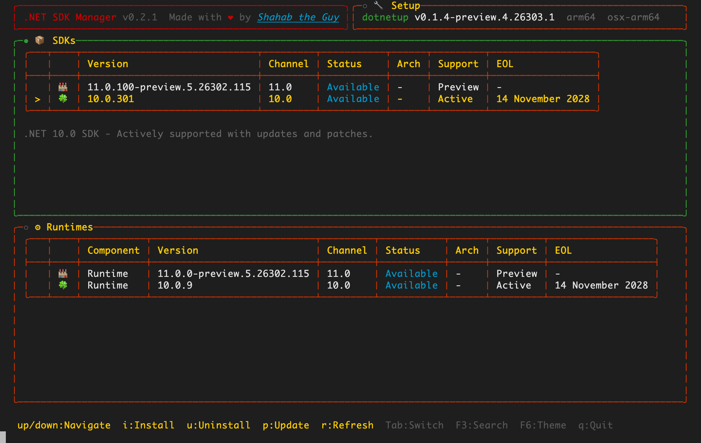
10.0.301 selected and marked Available — ready to install.Press i to install it. dsm streams the real download and install progress:
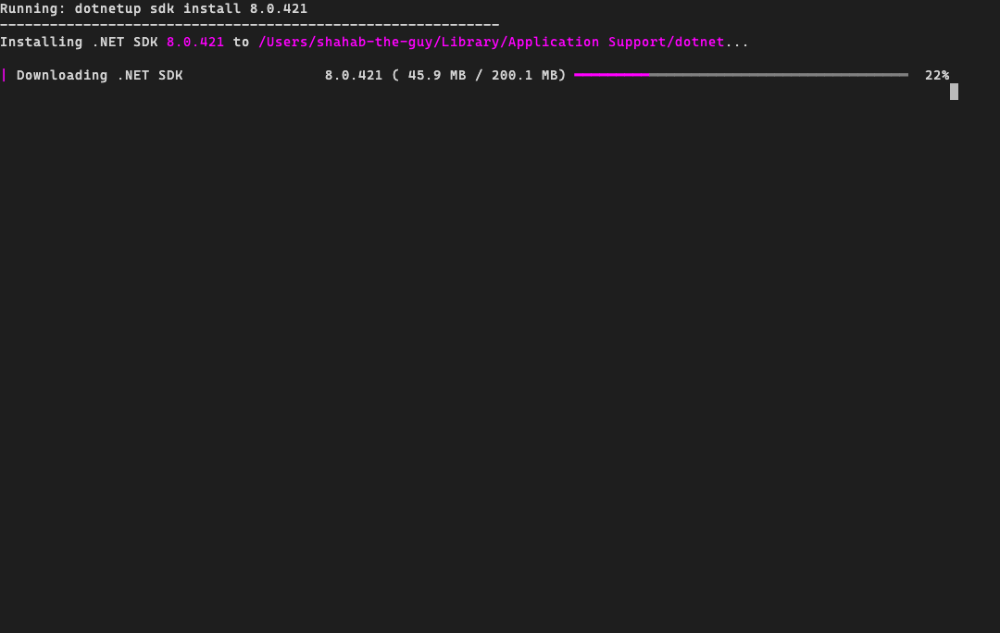
dotnetup command and a real progress bar.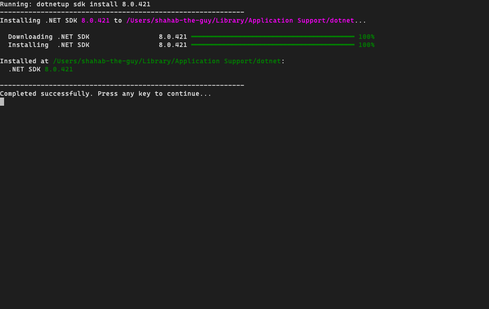
- i — install the selected version
- p — update to the latest in that channel
- r — refresh the data from the network
Search for older versions
The main screen only shows the latest of each channel. To find a specific older patch, open search with F3.
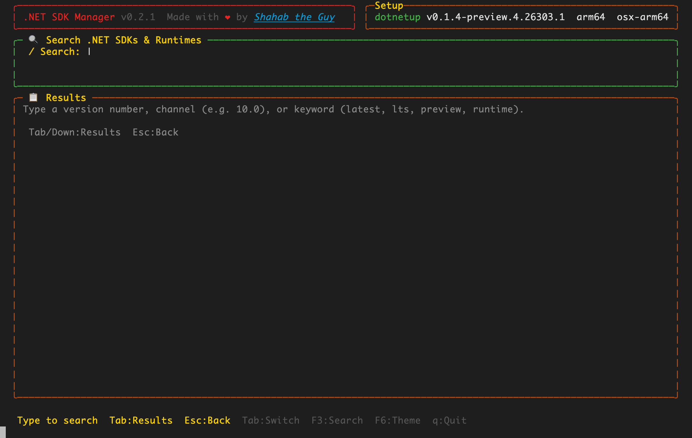
Type a channel (e.g. 8.0), a full version, or a keyword like preview, lts, or latest. Results update live as you type, with debounce — the UI never freezes.
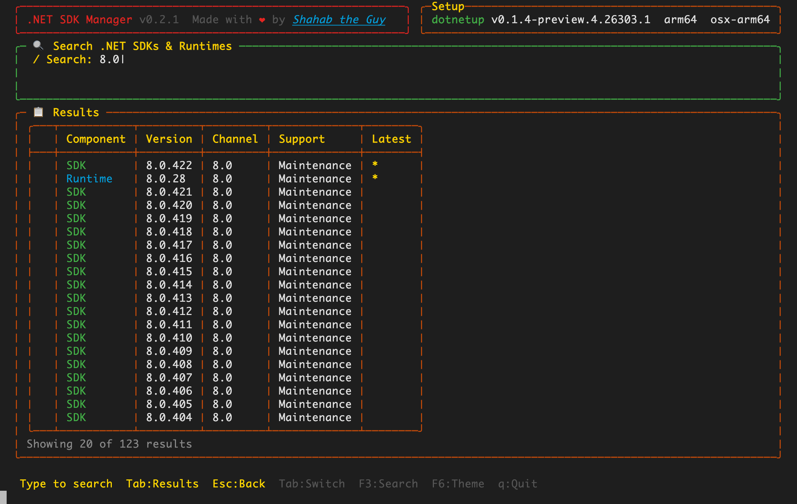
8.0 lists every available 8.0 SDK and runtime — newest first, with a ★ marking the latest.- Tab or ↓ — move from the input box into the results list
- Start typing again any time to refine the query
- Esc — back to the main screen
Install from search
Inside the results list, highlight the exact version you want and press i.
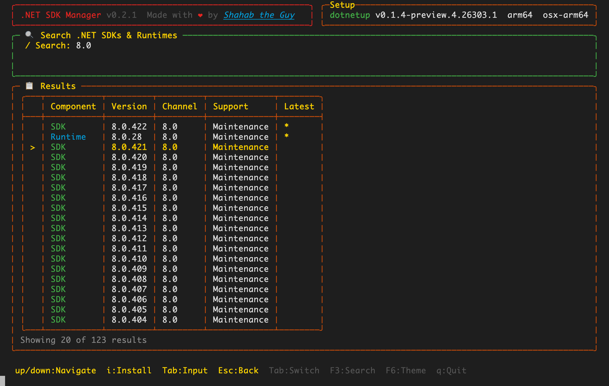
8.0.421 is selected — pressing i installs that exact version.Just like installing from the main panel, dsm runs dotnetup sdk install <version> and streams the progress. When it finishes, the version shows up as Installed back on the main screen.
Search installs the exact version you pick, so you can keep multiple patch levels of the same channel side by side.
Manage workloads for an SDK
Workloads (MAUI, Android, iOS, wasm-tools, Aspire, …) live inside a specific SDK feature band. Back on the main screen, focus the SDKs panel, highlight an installed SDK, and press w.
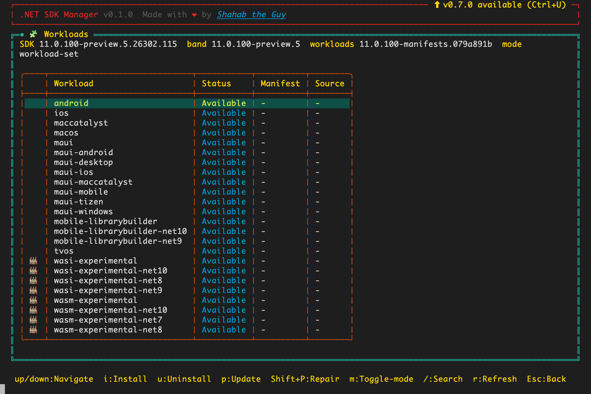
Highlight any row and act on it:
- i install the selected workload
- u uninstall it
- p update all installed workloads
- Shift+P repair
- / live search the catalog
- m toggle the update mode (workload-set ↔ manifests, with confirm)
- Esc return to the SDKs panel
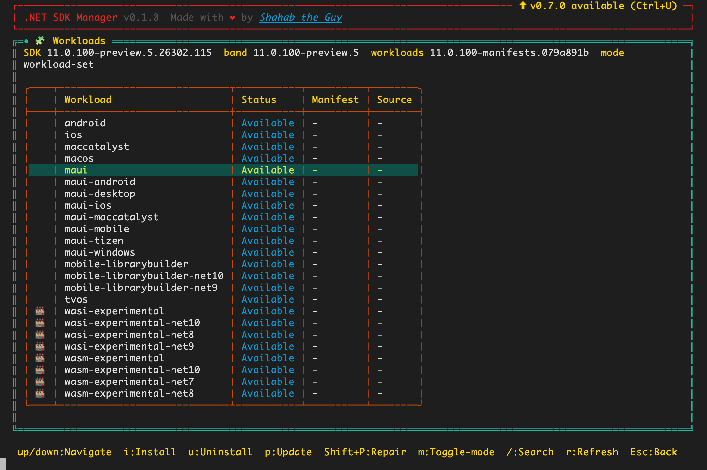
maui — pressing i runs dotnet workload install maui scoped to this SDK and streams the output.Workloads are per feature band, not per exact SDK version. Drilling into 10.0.301 or 10.0.199 shows the same list (band 10.0.100), while 8.0.422 gets its own independent net8 catalog — which is why aspire appears there but not on newer bands.
Under the hood, every dotnet workload … invocation runs from ~/.dsm/scratch/<sdk>/ where dsm has written a global.json pinning that exact SDK. Your shell state, PATH, and project files are never touched.
m — update-mode toggle
Pressing m switches how every future dotnet workload install and dotnet workload update on this machine resolves versions. This is a machine-wide .NET setting (persisted by dotnet workload config --update-mode), so dsm always shows a confirmation prompt before changing it.
| Mode | How updates work | When to use |
|---|---|---|
workload-set(default on .NET 9+) |
All manifests move together as one released, tested unit — the "workload set" version. Installing or updating any workload pulls in the corresponding pinned versions of every other manifest, so an ios update won't drag in an unrelated maui version bump you didn't ask for. |
The safe default. Reproducible across machines, matches CI, matches the SDK's servicing releases. |
manifests(legacy, .NET 7/8 behaviour) |
Each manifest updates independently to its own latest published version. Faster to pick up individual fixes, but combinations aren't tested together. | You're intentionally cherry-picking a newer manifest that hasn't been rolled into a workload set yet, or you're on an older SDK band that predates workload sets. |
The mode is stored in dotnet-workload-config.json under the SDK install root and read by every tool that shells out to dotnet workload — Visual Studio, dotnet on the CLI, dsm, and CI. Toggle it once and every future install/update on this machine follows the new mode.
When you press m, dsm shows a full-screen confirmation dialog. Press y to apply the change, or Esc / n / Enter to cancel and return to the Workloads panel without touching your config.
For the full command reference, see the official Microsoft documentation: dotnet workload command, dotnet workload config, and workload sets overview.
Uninstall an SDK
Back on the main screen, focus the SDKs panel, highlight an installed version, and press u.
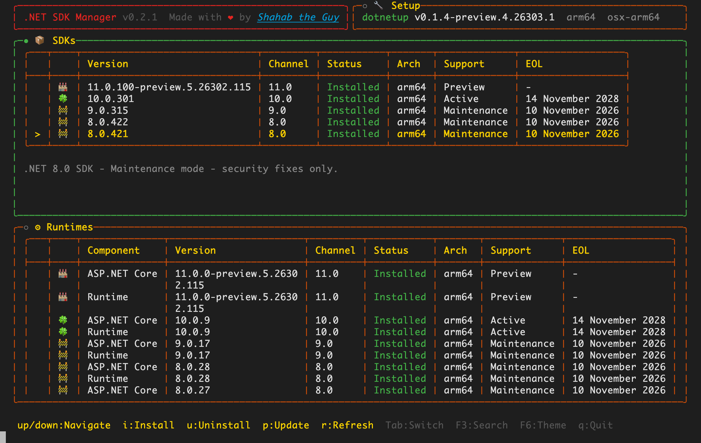
8.0.421 selected for removal — the description line below the table explains the channel's support status.dsm figures out the right dotnetup install spec automatically — feature bands, channels, or latest — so removal just works, then streams the output:
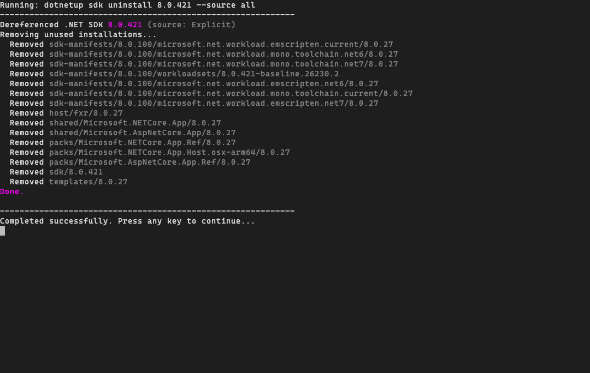
Uninstalling only removes the selected version. Before running dotnetup, dsm pins every other installed SDK and runtime to its exact version, so dotnetup’s cleanup of unused installations can’t remove other patch levels (for example, older 10.0.4xx SDKs after you installed a newer one) or the runtimes used by your remaining SDKs.